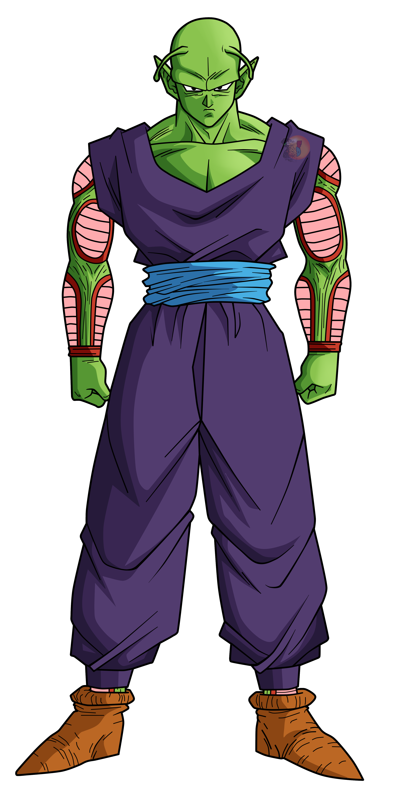
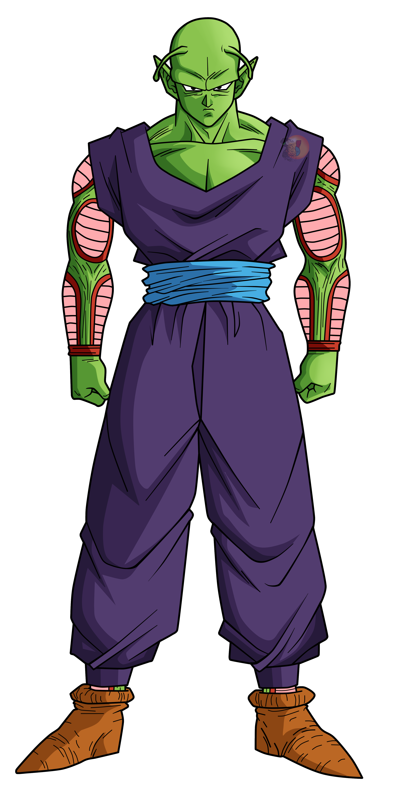

POWER-LEVEL
POTENTIAL
PIC  COLO
INTELLIGENCE
PERSONALITY
POWER-LEVEL
POTENTIAL
PIC  COLO
INTELLIGENCE
PERSONALITY
Piccolo is a great Namekian warrior with the stern demeanor of a sensei. Don't try to get this guy to laugh because you'd have a better chance of getting him to remove his cape. Piccolo may be green but he bleeds like the best of them. Piccolo is wise beyond his years which serves as a great attribute in combat situations. While he is no saiyan, he is still one of the world's toughest fighters. Piccolo trains Gohan as a child while Goku is busy defending planet Earth. Piccolo's special attack is his Special Beam Cannon!
OVERALL